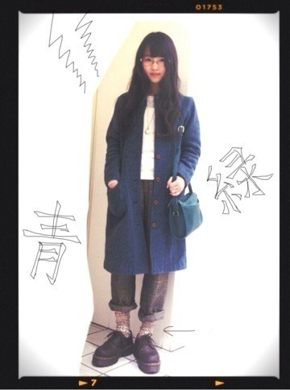
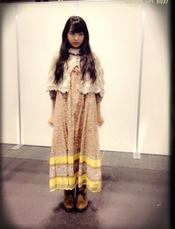
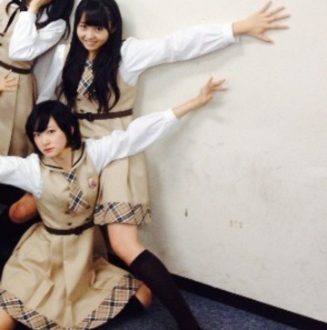
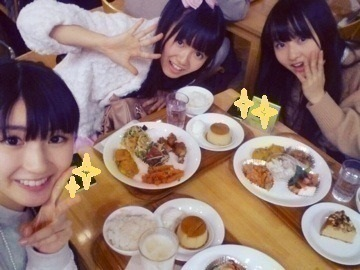
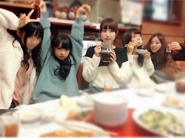

2013/1231Tueくたくたノートに記 録。532回目
今年一年はいろんなことが
変わった気がします。
1年って大きい。
今年はたくさんのことを経験しました。
嬉しいこと悔しいこと辛いこと
いろんな感情に振り回された年。
来年は貪欲にいこう。
勉強します。
この活動を
もっと楽しもうと思います！
ここで今年最後の私服載せる。

緑のオールドコーチ
青のロングコート
時計のネックレス
ヒョウ柄の靴下
また眼鏡だー笑
自分で髪をウェーブに巻くの
上手くなった気がする！
2013年、みなさんにとって
どんな年になりましたか。
良いお年を！！
まりか
2013/1230Mon色褪せたベティちゃ ん。531回目
京都で2日連続の握手会がありました。
来てくださったみなさん
ありがとうございました！
◇全国握手会
ひなちまとらりんとの3人のレーンの
予定でしたが急遽変わって
らりんとのレーンとなりました。
6thでもペアになったことあったから
らりん一家の方とも久しぶりに
お会いできて嬉しかったです。
握手してるときにちょっかい
出してくるらりんがめんどくさい←
そんなところもすきだけど
7thの最後の全握でした。
あっという間。
少し寂しかったなー
◇個別握手会
1部 ウェーブ巻きと三つ編み
2部 ゆるサイドポニー
3部 サイドお団子

ポンチョだよポンチョ
毛が生えた靴履いたよ。
はじめましての方が
たくさん来てくれました。
まりっ会の方が
増えてきている気がします。
ありがたいです。
雪降る中、足を運んでいただき
ありがとうございました。
ゆっくりお風呂につかってください。
風邪ひかないでくださいね！
.........
生駒ちゃんお誕生日おめでとう！
あーー18歳になっちゃったー
先に抜かされちゃったーーー

なかなかのポーズ笑
生駒はメンバーの中でいちばん
オンオフスイッチがある。
いつも先頭に立って、
がんばってくれてありがとう。
......
26日に発売された装苑に
おじゃましました。
母が昔から読んでいた影響で、
いつからか読むようになっていた装苑。
勉強になることばっかりで
私にとって教科書なのです。
愛読していたので
載られるなんて夢みたいです。
夢か、夢かこれは
衣装の秘密が載っているので
ぜひ見てください！
もうすぐ年があけるよー
あーーー落ち着かん
掃除しよう
まりか
2013/1225Wed嗚呼。530回目
みなさんメリークリスマス。
イヴは一人で久しぶりに
下妻物語と
デトロイトメタルシティ観て
笑っていました。
好きな映画です。
そして、夜にはチキンを食べました。
はあーチキン美味ー
嗚呼ー
今日はお仕事があった！
ふははははーーーーーーーーーー

お仕事終わりに3人で
クリスマスディナーして、
スイーツ食べちゃったりして。
ゆったりまったりしてました。
さゆ、ひめかありがとうー
乃木どこ妄想クリスマスの私服
古着のワンピースにベロアリボンを
服に巻いただけでほら、
クリスマスぽくなった。
niko and...のカーディガンは
形もかわいくて色も良いの。
ツリーを意識したの。
足元は茶色のスエードブーツなの。
これでデートとか寒すぎるので
クリスマスお部屋デート風です。
一緒にご飯作ってケーキ作って
パーティーするんです。
DVD鑑賞するんです。
妄想してください
話変わります。
私、実は小さい頃は兄とアニメを
よく見てたんです。
ジャンプフェスタで
NARUTOの声優の方々に
お会いした時興奮してしまったのは
ここだけの話。
ありがとうございました。
オープニング歌ってるのが
本当に不思議だ。
サンタさんありがとう。
いい子にしてないのにありがとう。
今年でクリスマスプレゼントは
最後だろう。
今日はKNEIPPのバスソルトで
リフレッシュしよう。
冷え性の方には
オレンジ・リンデンバウムが良い。
おすすすすすめです
明日からまた頑張ろう！！
まりか
2013/1223Mon漬けすぎたメンマ。 529回目
昨日は
MUSIC FOR ALL,
ALL FOR ONE 2013
がありました！
今回も出演できて嬉しかったです。
衣装は武道館でも着たサンタ衣装
みさはポニーテール
まりかはツインテール
来てくださったみなさん
ありがとうございました！
サイリウム見えたーーーーー

みんなでご飯たべたよー
楽しかったぜー
いくちゃんはご飯のことになると
本当に表情が豊かだー
そして今日は名古屋全握
月の大きさのfull踊ったよ
ペアは若月と！
ちょんまげびょーん
わかちゅいんにドキドキだったぜー！
楽しみにしてたの！
喉をやられてしまいまして...
ちょっと声が変わってましたが
team*若月のみなさん
優しく握手してくださって
ありがとうございました！
まりっ会のみなさん
いつも通り握手してくれて
ありがとうございました。
さっさと治さな！
みなさんも風邪に
気をつけてくださいね。
失いたくないからでの
くまのぬいぐるみに帽子被せたのは
アドリブですかー？
▶︎そうですー
曲終わりに被ってたニット帽を
落としてしまったの。
くまのぬいぐるみに被せて
なんとか乗り越えたよ。
武道館の感想については
他の星からのダンスと
失いたくないからの服装が好評！
白のポンチョに白のニット帽だった。
ポンチョって男の人が
すきそうなイメージ
明日クリスマスイヴだね。
みんななにするん
まりか
2013/1221Sat無類の緑好きですか らとか言ってみる。 527回目
コメント数を見た時の顔
↓
ナタリーさんすみません
Merry X'mas Show 2013
日本武道館
来てくださったみなさん
本当にありがとうございました。
クリスマスが近いということで
クリスマスメドレーを歌いましたー
一足先にクリスマス気分を
味わえたのではないかな。
ゆび祭りで初めて立った武道館。
たくさんのサイリウムに囲まれて
おいでシャンプーを歌ってる時
どこを見たら良いかわからなくて
戸惑いながらステージに立ってました。
全面がサイリウムできらきら光ってて
あの時の第一印象は
宇宙空間
昨日ライブしたんだなー
不思議だな。
来年の一発目は
2月22日のバースデーライブ。
横浜アリーナです！
代々木ではサプライズで武道館。
今回はなんと横浜アリーナ...
しかも、全曲披露。
大きな舞台に立つチャンスをもらって
グループ全体はもちろん、
自分自身がそれに
ついていけているのか...
来年は個人としても大きくなって
追いついていたらいいな。
スタッフのみなさん
メンバーのみんな
ありがとうございました！
頑張ります！
頑張ろう！
写真を撮る時間がなくて
載せるものがなかったーーーーー
真知子巻きしたからゆるして
まりか